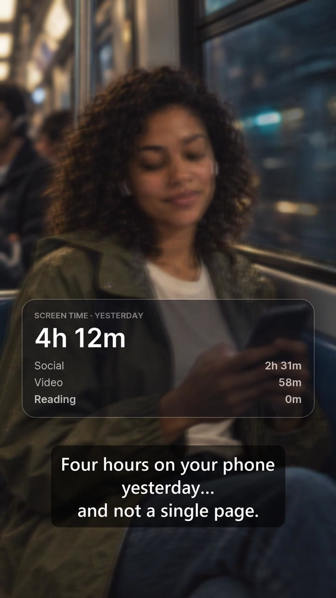
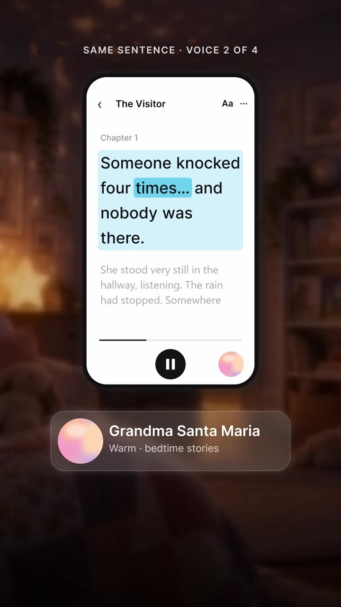
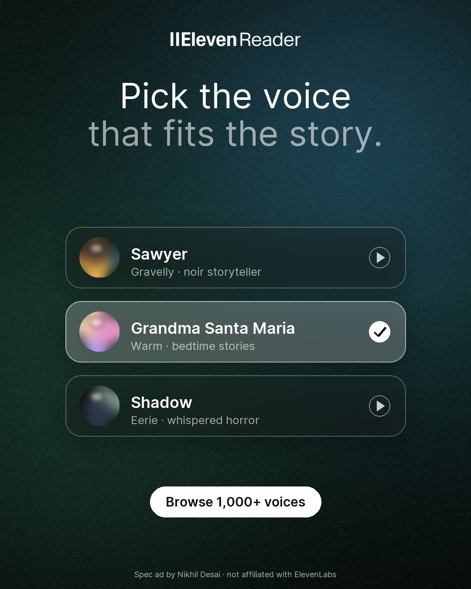
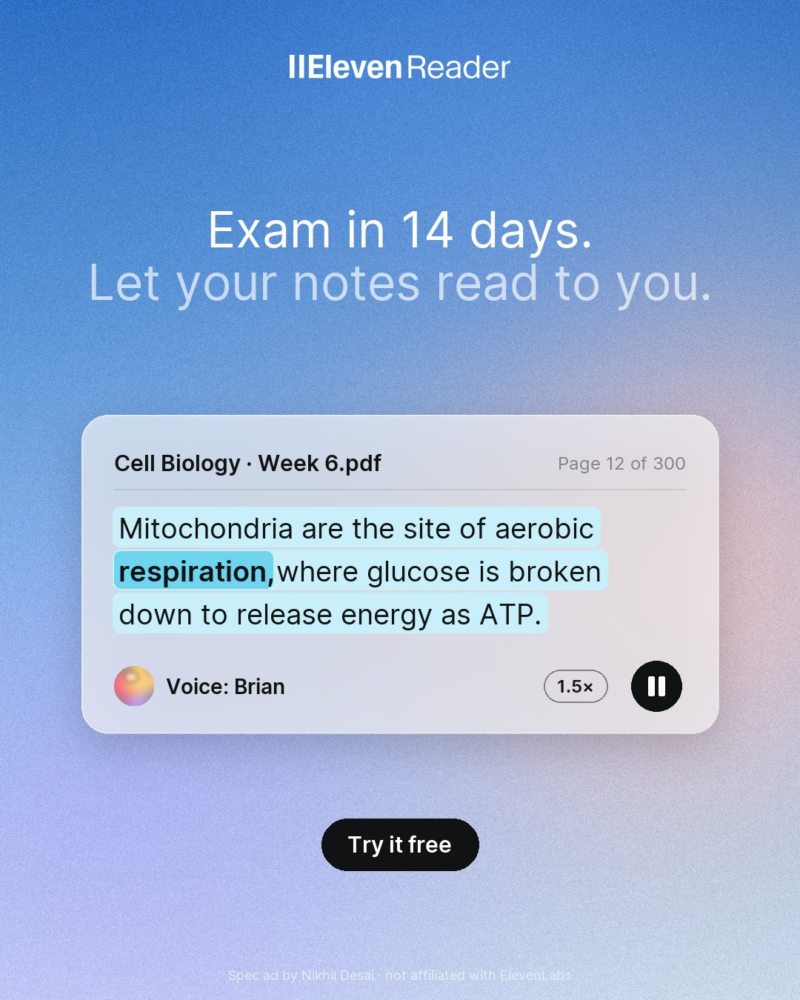
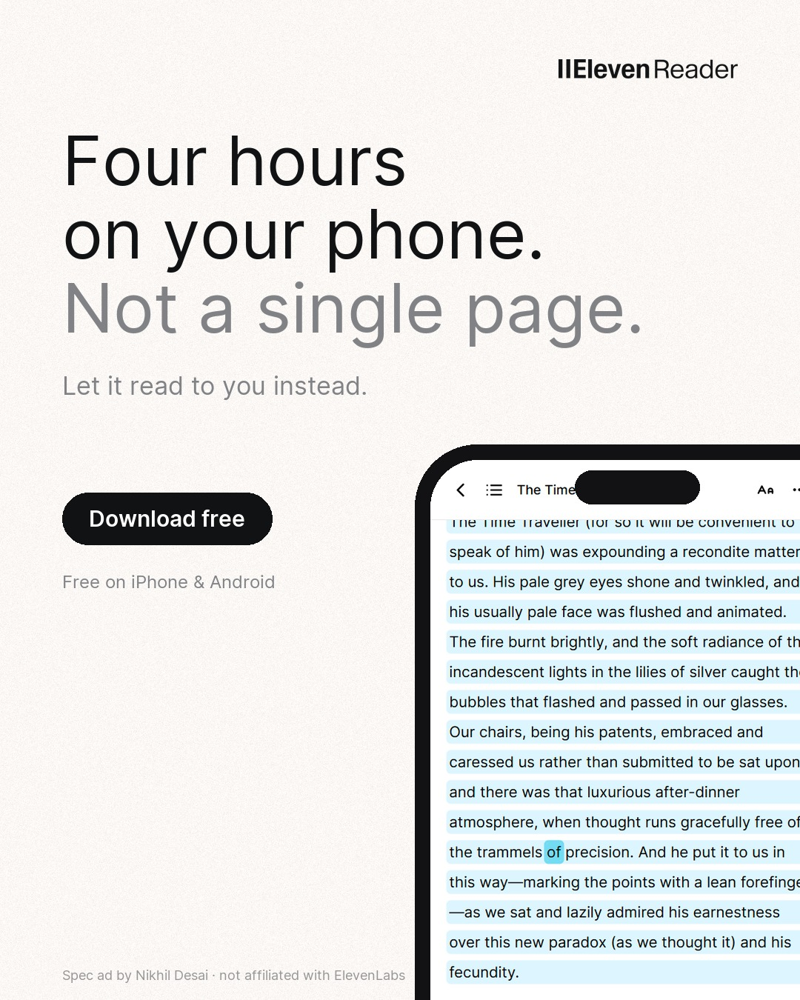
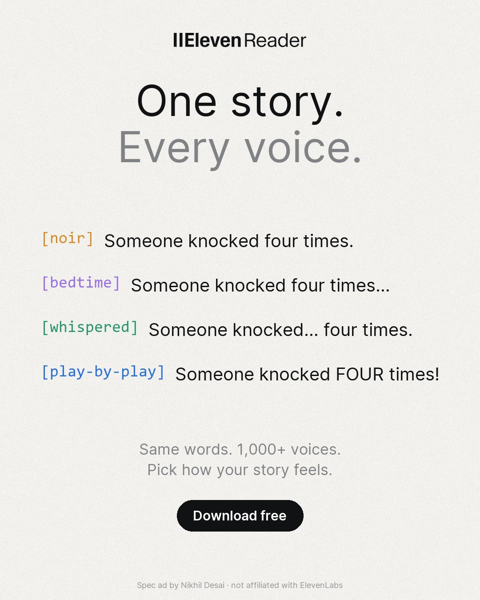
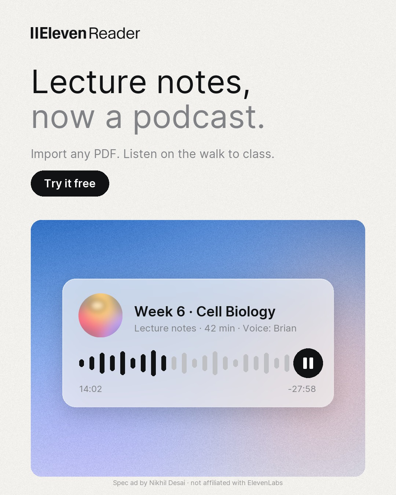
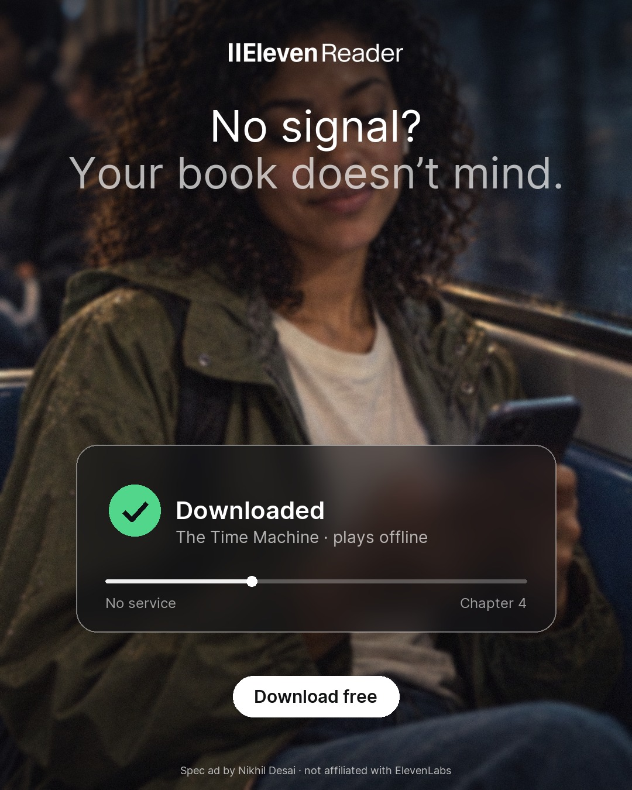

Spec concepts · ElevenReader
I studied ElevenReader’s live ads, found three things they don’t say yet, and produced two video concepts, six static concepts and a plan for testing them.

Video A · Your phone, but a book
Video B · One sentence, four voices
Six static conceptsSpec work by Nikhil Desai for a job application. Not affiliated with or endorsed by ElevenLabs.
Research
From ElevenReader’s live ads in Meta’s Ad Library, worldwide, compared with Speechify. Every ad runs the same formula: a hook, a ✓ checklist, “Download for free”.
Not one student or exam ad from either app, yet students arrive every exam season with reading they already own.
Offline on the train, CarPlay in the car, a sleep timer in bed: real features that never appear in the ads.
“1,000+ voices” is a checklist line. The fastest proof is hearing one sentence change character.
Test plan
Week 1 tests angles. Week 2 tests hooks on the winning angle. Week 3 tests formats.
Video concept A · 9:16 · ~22s
She never leaves her world. The app appears as translucent panels while the scene softens behind them: offline on the train, CarPlay in the car, a sleep timer in bed.
Video concept B · 9:16 · 27s
“Someone knocked four times. Nobody was there.” Read as noir, bedtime, horror and play-by-play. The story stays the same; only how it feels changes.
Static concepts · 1080 × 1350
Calm grounds, two-tone type and one product moment each: the reader highlight, the voice orb, real app screens.





How it was made
Voices, music, sound effects, images and Veo video shots in one Flow. Swap the script or character and re-run to get a new cell.
One timeline per cell: cuts, panels, captions and a mix with every line at the same loudness.
Built on ElevenLabs’ own ad system, from the campaign’s footage and real app screens.
About 20,400 ElevenLabs credits end to end (≈ ₹360), with every run price-checked first.